Development and Version Control
GitLab
What Did I Do?
I went to GitLab and created a Git repository for my front-end development project. In addition, I wrote a README file to help describe the project in terms of its purpose, technologies involved, and how to set it up.
How Did It Go?
While working on the README file, I realized that my initial version didn’t fully communicate all the essential details about the project. I took the time to revise it, making sure to include a clearer, more comprehensive explanation of the updates and changes I had made. This process helped me understand how important it is to document each change accurately. A detailed README not only guides others through the project but also serves as a helpful record for myself.
What I Learned
This experience taught me the importance of clear and thorough documentation in software development. I came to understand that a README file is not just a basic overview—it’s a key resource for users and collaborators to understand the project’s purpose, setup, and structure. Keeping it updated helps ensure that changes are clearly communicated and reduces confusion down the line. Writing the README also helped me think more critically about how I present my work and reinforced the value of being organized and clear in every stage of development.
Reflection
Working with GitLab has deepened my appreciation for version control in software development. I now better understand how tools like Git support collaboration and project tracking. While I’ve taken the first steps by creating repositories and writing documentation, I recognize that there are more advanced features—like branching, merging, and managing merge requests—that I’m eager to explore further. Learning these will enhance my ability to manage code efficiently and follow best practices in real-world development workflows.
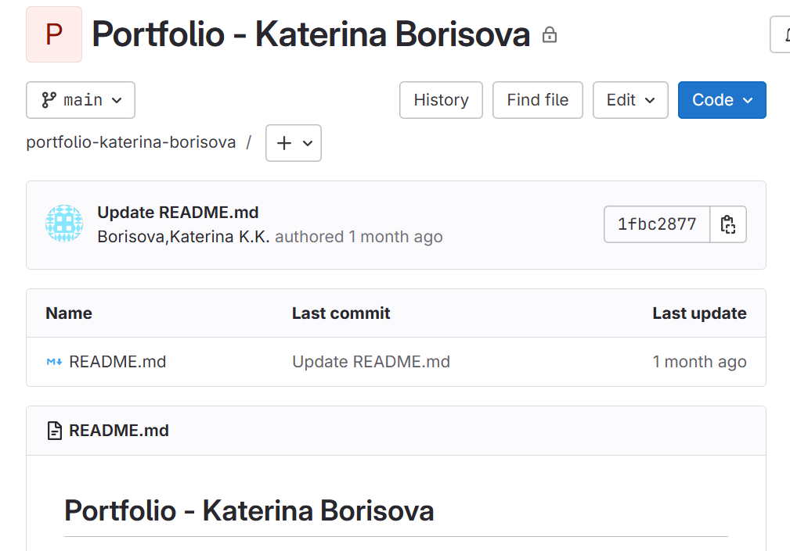
Git repository link: https://git.fhict.nl/I549093/portfolio-katerina-borisova.git
README:
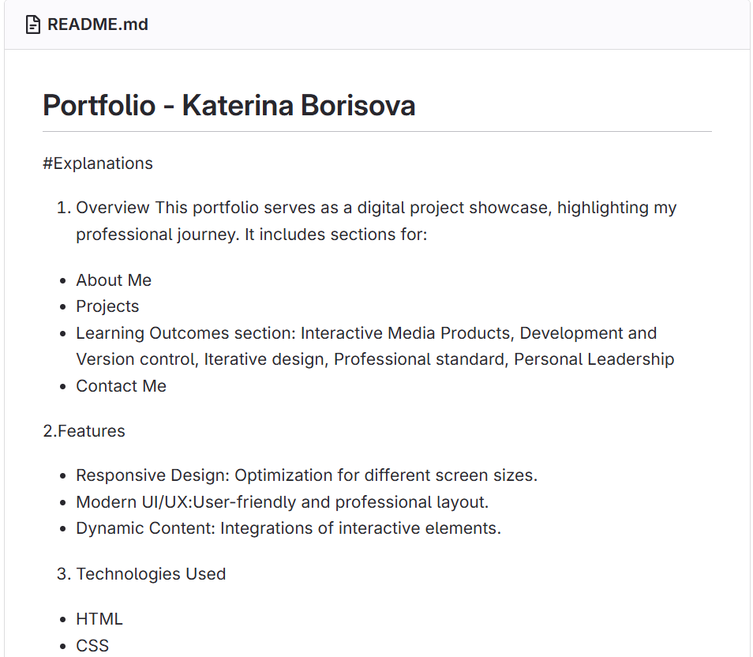
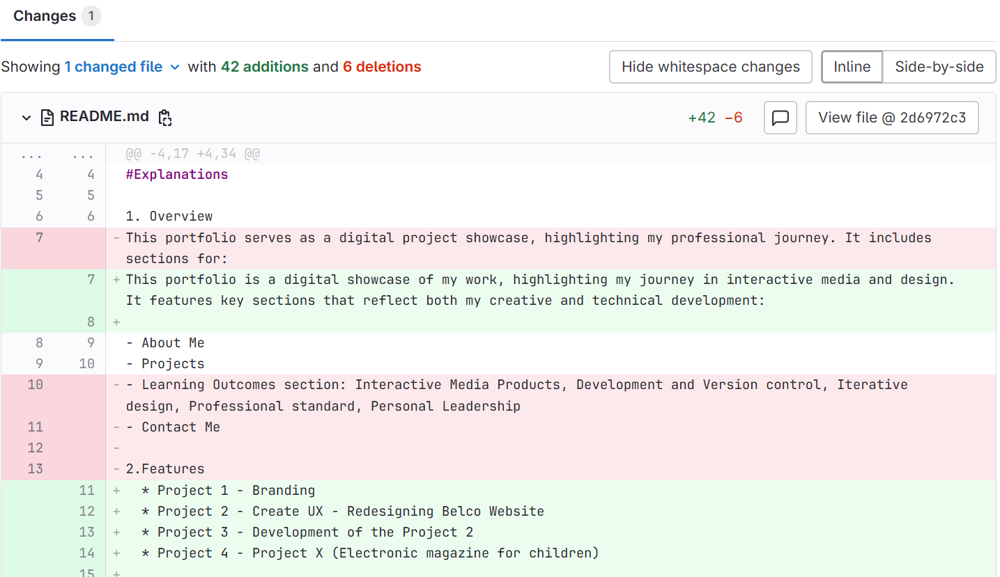
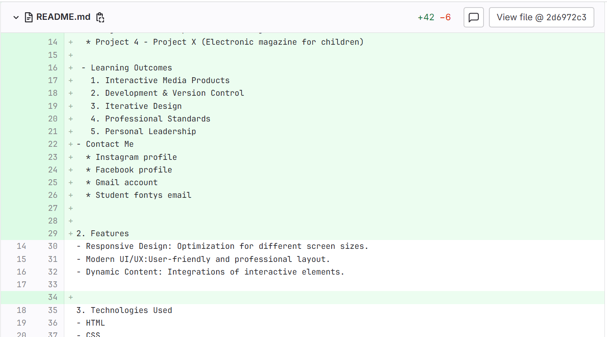
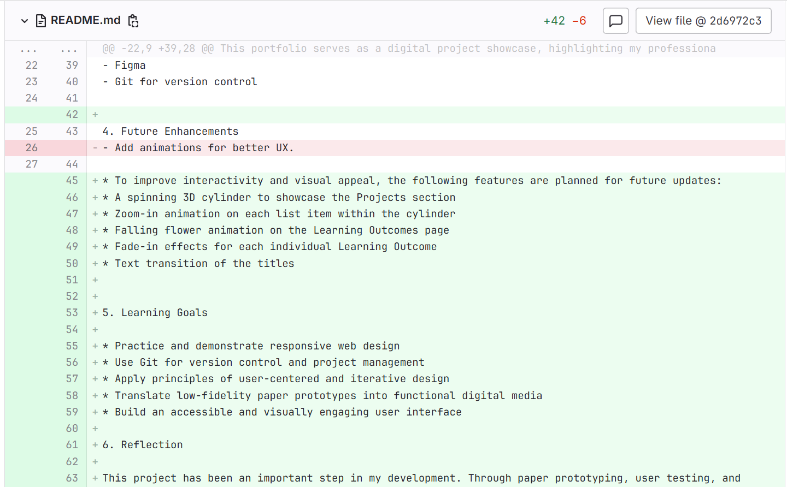
Coding
Introduction
While working on the design of my Learning Outcomes pages, I realized it would be a better user experience if people could click on images to view them in a larger size. This is especially useful for things like logo drafts or screenshots where small details matter. To solve this, I decided to implement a simple image modal using JavaScript.
What Did I Do?
I created a modal pop-up that activates when someone clicks on any image inside the .inline-img container. To do this, I wrote a combination of HTML, CSS, and JavaScript. The HTML part includes a hidden modal container with an image element inside it (modalImg) and a close button (×).
In the JavaScript, I added an event listener to every image in the .inline-img section. When one of these images is clicked, it sets the modal's display to block and changes the src and alt of the modal image to match the one that was clicked. This way, it shows the enlarged version of the selected image.
I also added a window-level event listener that closes the modal if you click anywhere outside of the image. This makes it easy and intuitive for the user to close the popup.
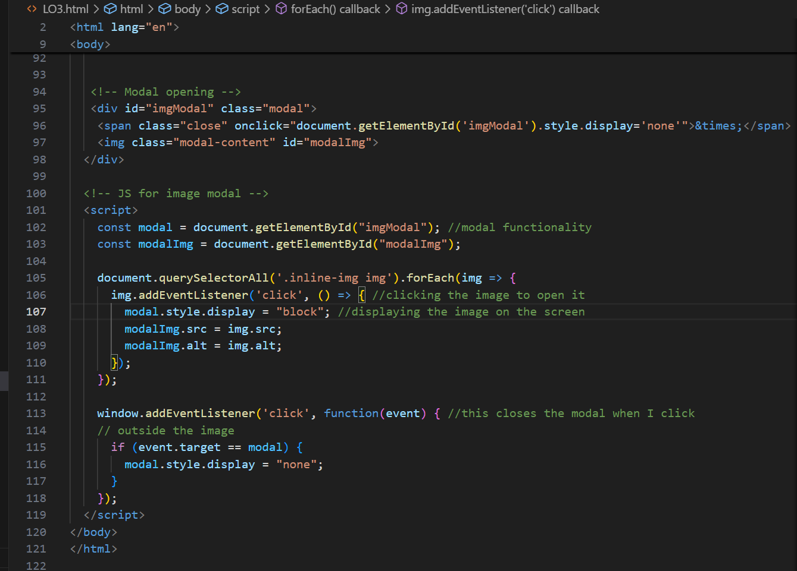
How Did It Go?
At first, I had a few issues getting the modal to appear correctly. It wouldn’t display in the center, and the background didn’t darken like I wanted. But after tweaking some styles and making sure the modal image had the correct class, it started working properly.
What I Learned
This task helped me better understand how JavaScript interacts with the DOM(Document Object Model). I learned how to target specific elements, dynamically change attributes like src and alt, and manage events like clicks.
Reflection
Looking back, I’m happy I added this feature. It wasn’t overly complex, but it made a noticeable difference in how the project feels. It adds polish and gives users more control, which is important in web design. Next time, I might explore adding animations or keyboard support to enhance accessibility. Overall, it was a small addition that made a big impact—and it reminded me how powerful even basic JavaScript can be when used the right way.
Go to the Learning OutcomesGit - pushing code issues
Introduction
Recently, I encountered a serious issue while trying to push my code to our group project repository on GitLab. With the help of my groupmate and some guidance from ChatGPT, I was able to resolve the problem and learn valuable lessons along the way.
What Did I Do?
Initially, I attempted to push my code using the terminal in Visual Studio Code, but it didn’t work. Confused, I turned to ChatGPT for help. It pointed out that Git wasn’t installed on my system, which was likely the root of the issue.
I began searching for the correct version of Git to download that would be compatible with my setup. After downloading and installing Git, I opened my system settings and entered the necessary configuration data. Then, I used the Command Prompt to run a few commands and verify that Git had been successfully installed on my computer. Finally, I restarted Visual Studio Code and confirmed that Git had been integrated properly.
Once Git was set up, I continued seeking help—again using ChatGPT and discussing the issue with my groupmate—to resolve the remaining errors I encountered while trying to push the code. With some additional troubleshooting, including configuring my Git credentials and setting the correct remote URL for the repository, I was finally able to push my code successfully.


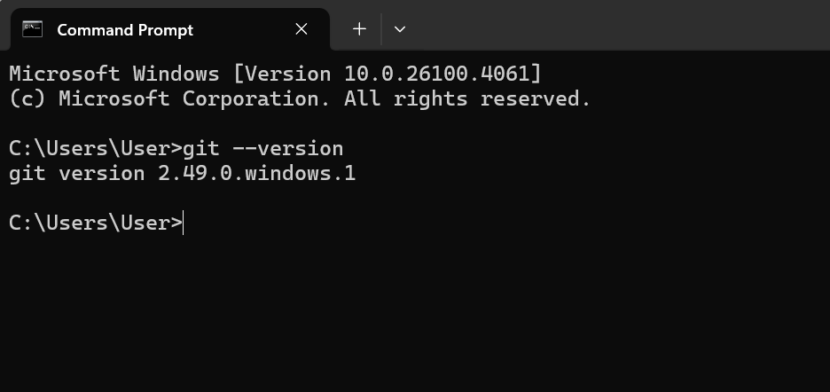

How Did It Go?
The process was challenging at first, especially since I wasn’t familiar with Git setup or troubleshooting Git errors. However, through persistence and collaboration, I was able to overcome the obstacles. Having both a peer and AI assistance made the process smoother and more educational.
What I Learned
- The importance of ensuring that all necessary tools, like Git, are installed and properly configured before starting a collaborative project.
- How to install and integrate Git with Visual Studio Code.
- Basic Git commands and how to troubleshoot common issues, such as authentication errors and push failures.
- The value of seeking help when stuck—whether from peers, online resources, or tools like ChatGPT.
Reflection
Looking back, I’m happy I added this feature. It wasn’t overly complex, but it made a noticeable difference in how the project feels. It adds polish and gives users more control, which is important in web design. Next time, I might explore adding animations or keyboard support to enhance accessibility. Overall, it was a small addition that made a big impact—and it reminded me how powerful even basic JavaScript can be when used the right way.
Go to the Learning OutcomesGit - pushing code Portfolio
Introduction
I focused on pushing my updated portfolio project to a GitLab repository. While it seemed simple at first, I encountered some issues, especially with Git conflicts. This experience helped me reinforce and apply the Git knowledge I’ve gained during previous team projects.
What Did I Do?
I started by updating my portfolio locally and wanted to push the changes to the main branch of my GitLab repository. I initialized the Git repository, added a remote, committed my files, and attempted to push.
However, since the remote repository already had an initial commit, Git rejected my push due to unrelated histories. I tried different commands, including git pull and git pull --rebase, which led to merge conflicts in some files like LO1.html and about.html.
Using my previous experience from a group project, I recognized the conflict markers and manually resolved the issues by editing the files, keeping the correct versions, and removing the conflict markers. After resolving them, I committed the changes and successfully pushed everything to the main branch.
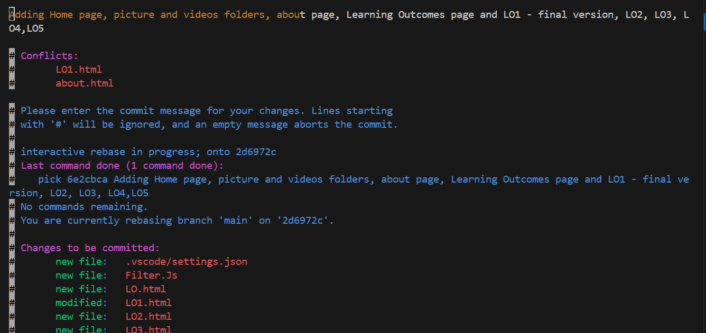
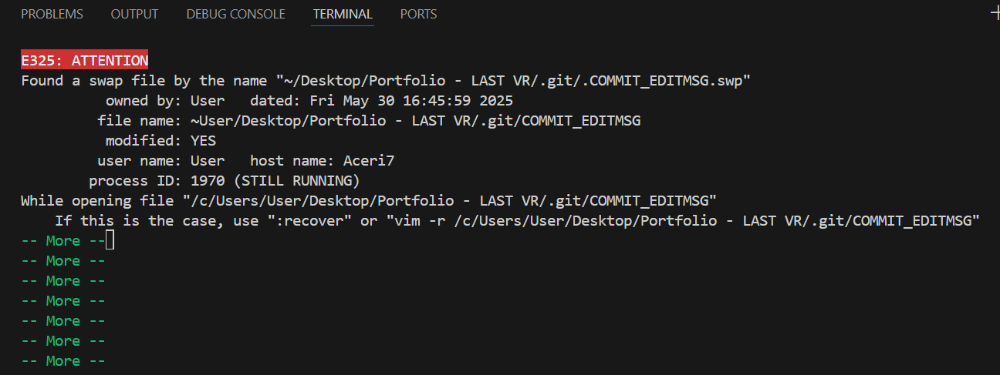
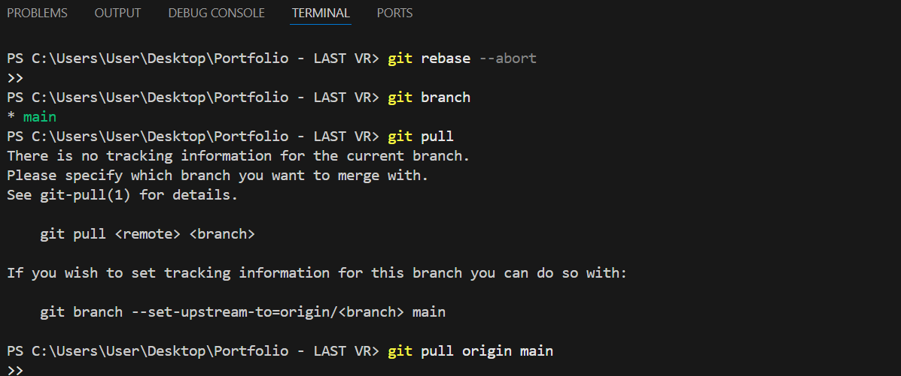
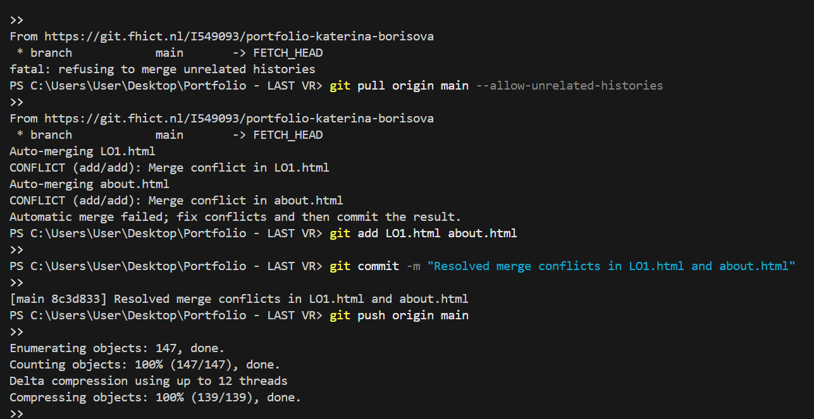
How Did It Go?
At first, I felt nervous because I wasn’t sure what went wrong, and I was afraid I might lose my changes. When the merge conflicts appeared, I took a step back and carefully read through the conflict messages. I used git rebase --abort when I felt stuck, which helped me return to a stable state.
I then retried the pull using the --allow-unrelated-histories option, carefully resolved the merge conflicts, and confirmed I was on the correct branch (main). Finally, I committed and pushed the updates successfully.
What I Learned
This experience taught me how to deal with Git conflicts more confidently. I learned the importance of understanding what Git is trying to tell me instead of panicking. I also practiced useful Git commands such as:
- git pull origin main --allow-unrelated-histories
- git rebase --abort
- git add
after resolving conflicts - git commit and git push
Overall, I deepened my understanding of Git workflows, especially when working with remote repositories that already have content. I now feel more prepared to handle Git issues in future projects.
Reflection
Looking back, this task pushed me out of my comfort zone and challenged me to take initiative when something went wrong. Initially, I felt confused and frustrated, but I reminded myself to stay calm and apply what I had learned. I’m proud that I managed to resolve the Git issues on my own, without losing any work.
This situation also helped me realize the importance of reading error messages carefully and using version control commands responsibly. Next time, I’ll make sure to check the state of the remote repository before pushing and consider pulling changes right at the beginning. I feel more confident now, and I trust myself more when it comes to solving technical issues independently.
Go to the Learning OutcomesREADME file and Repository for Project X
Introduction
I created a GitHub repository for my project X to organize and manage all the files, source code, and documentation in one place. This repository will serve as the main platform where I document my progress, collaborate with others, and maintain the development of the project.
What Did I Do?
- Repository Creation: I initialized a GitHub repository specifically for Project X.
- File Management: I will upload all relevant project files and code to the repository as development progresses.
- Collaboration: I invited my teachers to the repository as collaborators so they can access, review, and provide feedback on my work.
- Documentation: I began writing a detailed README file. It includes:
- A general overview of the project
- Key features and goals
- Tasks that have been completed
- Planned improvements and future tasks
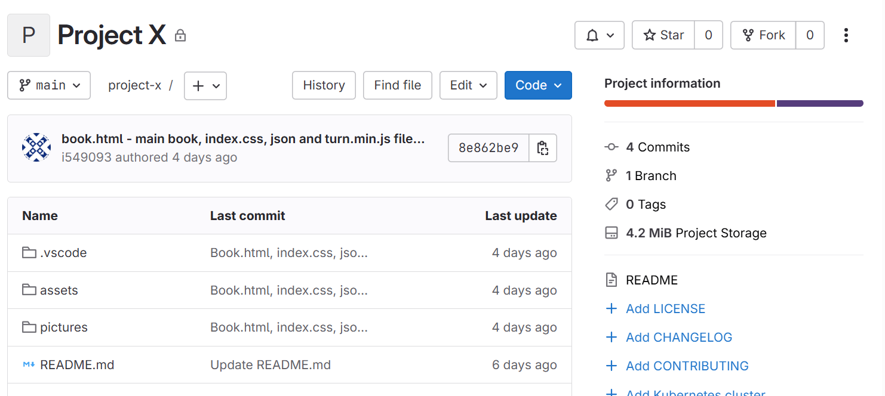
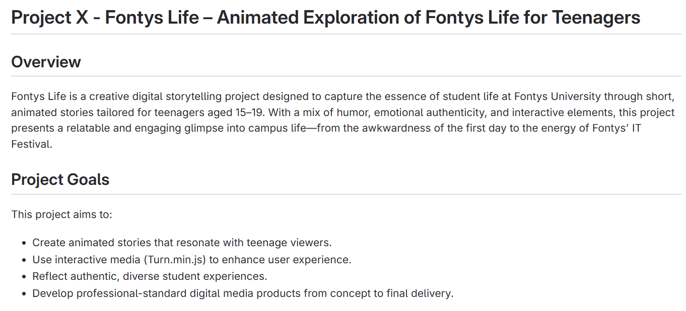
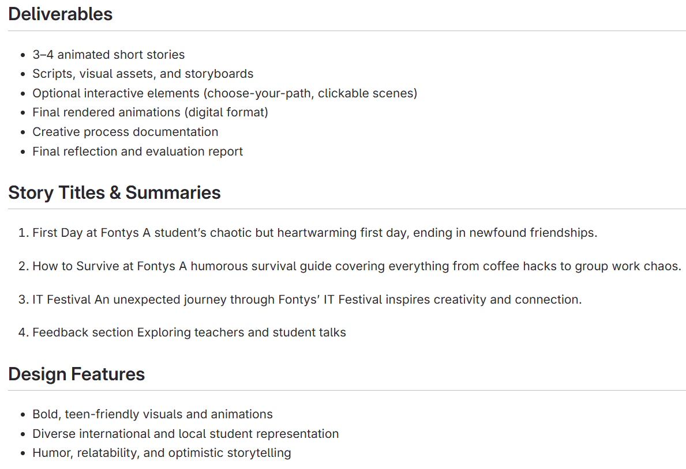
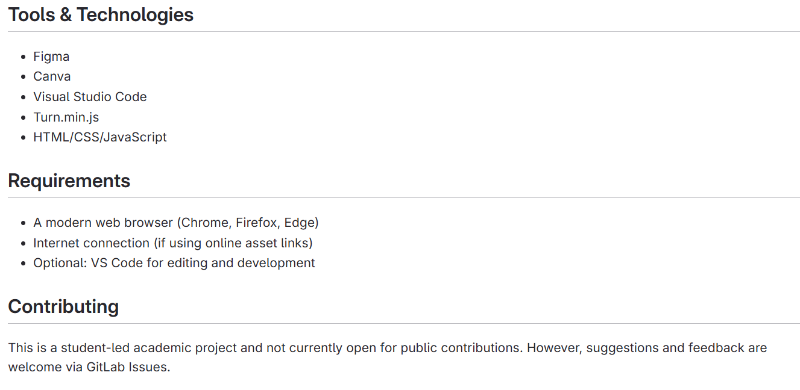
How Did It Go?
So far, the process has been smooth and productive. Setting up the repository was straightforward, and GitHub provided useful tools for collaboration and version control. Writing the README helped me better understand the scope of my project and organize my thoughts clearly. Inviting teachers as collaborators ensured that I can get support and feedback throughout the development process.
What I Learned
- How to create and manage a GitHub repository
- The importance of clear documentation in software projects
- How to collaborate on GitHub by inviting others and managing permissions
- The value of planning and structuring a project before jumping into code
Reflection
Starting this project taught me the value of preparation and organization. Creating the repository and setting up the initial structure gave me a strong foundation to build on. Writing the README helped me define the project's direction and clarify the steps I need to take. I'm now more confident in using GitHub for version control and collaboration, and I'm looking forward to continuing the development of Project X.
Git repository link: https://git.fhict.nl/I549093/project-x.git
Go to the Learning OutcomesFlower animation of the Portfolio
Introduction
As part of enhancing the user interface on the Learning Outcomes page, I implemented a flower animation to make the page more visually engaging and dynamic. This animation adds a decorative, falling flower effect that contributes to a more pleasant and interactive user experience.
What Did I Do?
- I began by adding flower elements directly in the HTML structure of the Learning Outcomes page.
- Then, I created and applied CSS classes to style the flowers — including size, color, position, and shape.
- I implemented a falling animation using keyframes in CSS to create the effect of the flowers gently drifting down the screen.
- I adjusted the timing and speed of the animation to ensure a smooth and natural movement, setting the appropriate duration in seconds.
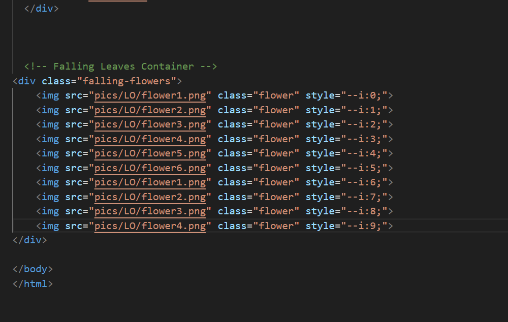
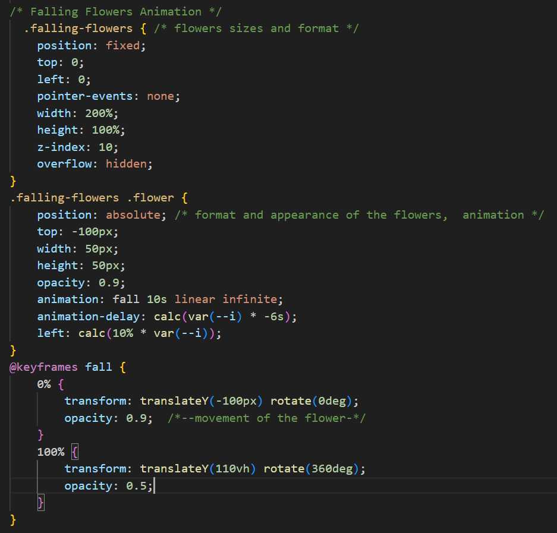
How Did It Go?
The process went well overall. It took some trial and error to position the flowers correctly and get the animation to look smooth and realistic. Tuning the animation speed and testing the responsiveness across different screen sizes required a bit of patience, but the final result matched my expectations.
What I Learned
- How to structure and manage HTML elements for animation purposes
- How to use CSS animations (with @keyframes) to create dynamic effects
- The importance of timing and performance when working with animations
- How to improve the aesthetic quality of a page without compromising usability
Reflection
Adding this animation taught me how small visual elements can significantly improve the user experience when implemented thoughtfully. I gained more hands-on experience with CSS animations, and it was satisfying to see the concept come to life on the page. In future projects, I’ll continue exploring animation to enhance visual storytelling while keeping usability in mind.
Go to the Learning Outcomes